4 Análise exploratória dos dados
Após o tratamento de uma base de dados, em geral, temos o interesse em examinar e estudar as características de cada uma das variáveis presentes no banco, de forma a identificar comportamentos e relações entre as variáveis. Morettin e Singer (2020) apresentam um conjunto de questões que normalmente se tenta responder ao se realizar uma análise dos dados, sendo elas:
qual a frequência com que cada valor aparece no conjunto de dados ou seja, qual a distribuição de frequências dos dados?
quais são alguns valores típicos do conjunto de dados, como mínimo e máximo?
qual seria um valor para representar a posição (ou localização) central do conjunto de dados?
qual seria uma medida da variabilidade ou dispersão dos dados?
existem valores atípicos ou discrepantes (\(outliers\)) no conjunto de dados?
os dados podem ser considerados simétricos?
Para responder a essas questões, fazemos uso de um conjunto de técnicas numéricas e gráficas que nos permitem detectar padrões, resumir informação e apresentar visivelmente características das variáveis de um conjunto de dados. A essa metodologia denominamos análise descritiva ou análise exploratória de dados e será objeto de estudo desse capítulo. Para ilustrar as técnicas apresentadas, vamos realizar a análise descritiva de algumas das variáveis presentes no banco de dados de COVID-19 em gestantes e puérperas já devidamente tratadas no capítulo anterior.
A decisão por qual técnica empregar para a análise descritiva de uma variável, passa por qualificar corretamente a natureza da variável em estudo em qualitativa nominal, qualitativa ordinal, quantitativa discreta ou quantitativa contínua. Maiores detalhes sobre essa teoria podem ser vistos na Seção XX.
Uma das principais ferramentas de resumo de informações de variáveis qualitativas é a organização tabular que fornece a distribuição de frequências de cada variável, conforme apresentado na Seção XX.
Em se tratando de variáveis quantitativas, utilizar uma tabela de frequências para resumir informações da variável, especialmente nos casos de variáveis contínuas, pode não ser a melhor estratégia, visto que é comum obter frequências muito pequenas (em geral, 1) para os diferentes valores da variável, não atingindo o propósito de resumir a informação. Nesse sentido, vamos apresentar aqui medidas-resumo que podem ser utilizadas para variáveis quantitativas.
4.1 Medidas-resumo
Uma medida-resumo é uma construção matemático/estatística que tenta capturar em um único número um comportamento presente nos dados. Quatro grandes grupos de medidas podem ser considerados para resumir variáveis quantitativas, são elas: posição, dispersão, assimetria e curtose. Vejamos agora que medidas são essas e como interpretá-las.
4.1.1 Medidas de posição
As medidas de posição, como o nome diz, indicam posições de interesse de valores da variável. Por exemplo, se idade é a variável de interesse investigada em um grupo de pessoas, e se quer trazer um informação resumida dela no grupo, apresentar a menor e a maior idade encontrada, valores típicos da idade no grupo, são exemplos de medidas de posição.
De maneira geral, vamos explorar aqui as seguintes medidas posição: valor mínimo, valor máximo, percentis e medidas de tendência central, tais como moda, média e mediana. Os valores mínimo e máximo de uma variável quantitativa estão relacionados, respectivamente, com o menor e o maior valor observado da variável analisada.
Medidas que buscam descrever um valor típico que a variável apresenta são chamados de medidas de tendência ou posição central. Mas o que seria uma valor típico? Como podemos definir isso? A resposta não é única e, por isso, existem diferentes medidas de tendência central. Por exemplo, se o valor típico considerado for aquele que mais se repete no conjunto de dados para variável, o que temos é a moda. Se o valor típico for aquele que ocupa uma posição central no conjunto de dados, de tal forma que 50% dos dados observados estão abaixo desse valor e os demais 50% estão acima, o que temos é a mediana. Agora, se o valor típico considerado for pensado como um ponto de equilíbrio das observações da variável, então temos a média.
Por definição, a medida estatística moda corresponde aos(s) valor(es) mais frequente(s) do conjunto de dados observados para uma variável. Conjunto de dados que não apresentam valores repetidos são considerados amodais. Um conjunto de dados é bimodal se tiver duas modas, indicando que não apenas um único valor, mas dois valores do conjunto de dados apresentam frequências igualmente mais altas que os demais valores. Usando de mesmo raciocínio, havendo três ou mais valores modais em um conjunto de dados, dizemos que o conjunto de dados é trimodal ou multimodal, respectivamente. Vale citar que a moda também pode ser obtida para variáveis qualitativas.
A média é a medida obtida ao somar todos os valores da variável e dividí-la pela quantidade de dados observados. Matematicamente, considere \(x_1\), \(x_2\), …, \(x_n\) as observações de uma variável \(X\), assim a média é definida como:
\[\begin{equation} \bar{x} = \frac{\sum_{i = 1}^n x_i}{n}. \end{equation}\]Para entender essa medida como ponto de equilíbrio, vamos representar cada valor observado como pesos de mesma massa e distribuí-los sobre uma reta de massa desprezível nas posições referentes aos valores da variável em questão. Nosso objetivo agora é encontrar um ponto de apoio nessa reta de tal forma que ela e os pesos corretamente posicionados nela fiquem perfeitamente equilibrados, similar a uma balança. A média é o único local em que se pode localizar o ponto de apoio na reta de forma a obter um perfeito equilíbrio da reta e dos pesos. Para ilustrar essa ideia, apresentamos a seguir uma representação gráfica considerando o subconjunto da variável idade {22, 28, 29, 34, 34, 35, 36, 36, 37, 39}, cuja média é 33.


No início dessa seção, apresentamos a noção intuitiva do que representa o valor mediano, mas não como obtê-lo formalmente. A construção dessa medida passa por organizar os dados de maneira crescente e calcular a posição central dos dados via \(\frac{n+1}{2}\), em que \(n\) representa o tamanho do conjunto de dados relacionada a variável de interesse. O valor mediano é o valor na amostra ordenada que ocupa a posição \(\frac{n+1}{2}\).
Quando \(n\) é ímpar, a expressão \(\frac{n+1}{2}\) vai sempre gerar um valor inteiro, facilitando a obtenção da mediana. Por exemplo, o subconjunto a seguir é formado por nove valores retirados da variável idade, sendo eles: 21, 28, 24, 22, 31, 26, 22, 38, 16.
Ordenando esse subconjunto, obtemos 16, 21, 22, 22, 24, 26, 28, 31, 38.
Como \(n=9\), a posição em que se encontra a mediana será \(\frac{9+1}{2}=5\). Assim, a mediana será 24, pois é o valor que está na quinta posição do subconjunto ordenado.
Se \(n\) é par, a expressão \(\frac{n+1}{2}\) gerará um valor não inteiro que apresenta apenas uma única casa decimal após a vírgula igual a 5. Por exemplo, se a variável idade apresenta apenas 8 valores então \(n = 8\) e a posição em que a mediana está localizada é dada por \(\frac{n+1}{2} = \frac{8+1}{2} = 4,5\). Como inferir um valor para a mediana quando a posição que ela ocupa é decimal? Note que a posição \(4,5\) está exatamente no meio das posições 4 e 5, então o valor mediano será definido como a média entre os valores que ocupam as posições 4 e 5.
O subconjunto abaixo também consiste de valores retirados da variável idade, porém note que nesse exemplo há 8 valores, ou seja, \(n=8\).
\[ 27, 16, 31, 43, 26, 42, 17, 40. \]
Ao ordenarmos, temos:
\[ 16, 17, 26, 27, 31, 40, 42, 43. \]
A mediana será o valor que está na posição \(\frac{8+1}{2} = 4,5\). Logo, visto que a mediana está entre os valores que ocupam a quarta e quinta posição, corresponde à média entre esses valores, sendo \(\frac{27+31}{2}=29\).
Com ideia correlata a mediana, podemos apresentar medidas de posição não centrais, as quais denominamos quantis ou percentis. O percentil 20, por exemplo, é o valor da variável em que 20% das observações no conjunto de dados apresentam valores menores ou iguais a ele. Por consequência, as restantes 80% das observações possuem valores acima do percentil 20. De maneira geral, podemos definir o percentil de ordem \(p\) como o valor da variável em que \(100p\%\) \((0 < p < 1)\) das observações estão à sua esquerda, ou seja, são menores ou iguais que ele.
Alguns percentis destacam-se por serem muito utilizados na análise de dados, não só numericamente como graficamente. Esses percentis são conhecido como quartis e basicamente dividem o conjunto de dados em 4 partes de mesmo tamanho. O primeiro quartil (\(Q_1\)) é o percentil 25, o segundo quartil (\(Q_2\)) é o percentil 50 e o terceiro quartil (\(Q_3\)) é o percentil 75. Vale notar que o segundo quartil é a mediana. De posse desses valores, como veremos mais a frente nesse capítulo, iremos construir o gráfico do tipo \(boxplot\), bastante utilizado na análise de dados da saúde.
Ainda com respeito aos percentis, outro termo comum na literatura é o decil que refere-se a divisão em 10 partes de mesmo tamanho do conjunto de dados associado a variável analisada. O primeiro decil, por exemplo, é o percentil 10 e o sexto decil é o percentil 60.
Todas as medidas de posição aqui apresentadas tem em comum terem a mesma unidade de medida dos valores da variável observada, o que traz bastante interpretabilidade.
4.1.2 Medidas de dispersão
Por mais que as medidas de posição apresentadas sejam muito úteis na análise dados, elas por si só não se bastam como medidas resumo das observações de uma variável em um conjunto de dados. É possível construir diferentes conjuntos de dados para uma mesma variável que apresentam os mesmo valores de medida central (média, mediana e moda), mas tem comportamentos absolutamente diferentes. Por exemplo, veja a figura a seguir.


Os dois conjuntos de dados apresentam os mesmos valores de média, mediana e moda. O que diferencia os dois conjuntos? O quão diferentes ou parecidos são as observações entre si em cada conjunto da variável. Na Figura Figura fig-var2, notamos que os quatro valores observados são iguais entre si e que, portanto, as observações nesse conjunto não variam, diferente do que ocorre para os dados que geraram o gráfico da Figura Figura fig-var1. Medidas de dispersão ou variabilidade são as medidas responsáveis por quantificar o quão diferente são os dados entre si. De forma bastante intuitiva temos que se os dados observados da variável não variam, então a medida de dispersão dela é zero e, caso haja diferenças entre os valores observados, então essa medida vai ser um valor positivo. Quanto maior a medida de variabilidade, mais diferente são os dados observados da variável entre si.
Não existe uma única medida de dispersão na literatura, aqui vamos considerar as seguintes medidas: amplitude, intervalo interquartil, variância, desvio padrão e coeficiente de variação.
De fácil obtenção e interpretabilidade, a amplitude é a diferença entre o valor máximo e o valor mínimo da variável analisada no conjunto de dados e nos dá uma ideia do intervalo de variação dos dados. Uma desvantagem é que essa medida é absolutamente influenciada pela presença de valores discrepantes ou \(outliers\). O intervalo interquartil é uma medida mais robusta do que a amplitude intervalar e é calculada como a diferença entre o terceiro e o primeiro quartil, ou seja, é a amplitude entre os 50% dos dados centrais.
Por mais informativas que sejam as medidas de amplitude e intervalo interquartil, queremos uma medida de dispersão que não considere apenas dois valores da amostra (mínimo e máximo ou primeiro e terceiro quartis) e sim todos os dados. Uma medida bastante intuitiva seria considerar a soma dos desvios de cada uma das observações em torno da média. Mas aí temos um problema: a soma dos desvios da média é sempre zero! Isso acontece porque sempre há desvios positivos e negativos que quando somados se anulam. Uma solução para essa questão é considerar alguma função que considere apenas o valor do desvio e não o seu sinal. Uma função candidata é a função quadrática (lembre que, por exemplo, \((−2)^2=4\)). Nessa construção surge a variância: soma dos desvios quadrados dividida pelo total de observações (\(n\)), ou seja, a média dos desvios quadrados. Assim, a variância quantifica o quanto os dados estão dispersos da média, em média.
Matematicamente, considere \(x_1\), \(x_2\), …, \(x_n\) as observações de uma variável \(X\) e \(\bar{x}\) a média observada dessa variável. A variância seria calculada como:
\[ \mbox{Var(X)} = \frac{\sum_{i = 1}^n (x_i - \bar{x})^2}{n}. \tag{4.1}\]
Por mais intuitiva que seja essa construção, programas como o R e similares utilizam em sua análise uma versão modificada do cálculo da variância acima apresentado, em que a soma dos desvios quadrados é dividida por \(n-1\), não por \(n\). Justificativas para isso se devem a propriedades inferenciais. A maioria dos conjuntos de dados considerados nos estudos referem-se a análise de amostras de uma população e não a análise de todos os elementos de uma população. Ao mesmo tempo, um dos principais objetivos da análise estatística é fazer análises para a população e não apenas para a amostra considerada no estudo. Basicamente, se temos interesse de conhecer o valor médio de uma variável na população (\(\mu\)), na impossibilidade de analisar todos os elementos dela e obter a medida, o fazemos de forma aproximada investigando o valor médio dessa variável na amostra (\(\bar{x}\)). Esse mesmo raciocínio ocorre para a variância, na impossibilidade de obter a variância da variável para todos os elementos da população (\(\sigma^2\)), analisamos essa medida via amostra, o caso é que é possível mostrar que para amostras de tamanho pequeno, a variância apresentada em (Equação eq-var1) não aproxima-se bem do valor de \(\sigma^2\). Matematicamente, é possível mostrar que tal dificuldade é contornada fazendo uso do divisor igual a \(n-1\) em (Equação eq-var1). Na literatura esse cálculo muitas vezes é denominado como variância amostral e representado pelo símbolo \(S^2\) de tal forma que
\[ S^2 = \frac{\sum_{i = 1}^n (x_i - \bar{x})^2}{n-1}. \tag{4.2}\]
Vale ressaltar também que a medida que se considera tamanhos de amostra maiores, calcular a variância com divisor \(n\) ou \(n-1\) torna-se indiferente.
Como a unidade de medida da variância é o quadrado da unidade de medida da variável correspondente, convém definir outra medida de dispersão que mantenha a unidade de medida original. Uma medida com essa propriedade é a raiz quadrada da variância, conhecida por desvio padrão.
Caso o interesse seja calcular e comparar a dispersão entre variáveis com unidades dimensionais de natureza diferente, por exemplo, comprimento (em metros) e massa (em kg), não convém utilizar as medidas de dispersão apresentadas anteriormente pois todas as medidas apresentadas carregam consigo a unidade de medida considerada para a variável. Nesse caso, podemos fazer uso do coeficiente de variação (CV) para cada uma das variáveis analisadas, já que o CV é uma medida de dispersão relativa adimensional, calculada via razão entre o desvio-padrão e a média observada para a variável e quanto maior o seu valor, maior a dispersão dos dados em termos relativos a média.
4.1.3 Medidas de assimetria e curtose
Além das medidas de posição e variabilidade, existe um conjunto de medidas dedicadas a explorar a forma da distribuição de frequências dos dados. Especificamente aqui estudaremos algumas: coeficientes de assimetria e de curtose e variações destas.
Como boa parte dos estudos na área de saúde é realizado através de amostras da variável de interesse na população, vamos precisar definir os momentos amostrais centrais que serão ferramenta fundamental para a construção dos coeficientes de assimetria, curtose e seus derivados. Por definição, o momento amostral centrado (na média) de ordem \(r\) é dado por
\[ m_r = \frac{\sum_{i = 1}^n (x_i - \bar{x})^r}{n}, \; r = 1, 2, \cdots. \]
A versão populacional do momento centrado de ordem \(r\) é expressa por \(\mu_r = \frac{\sum_{i = 1}^n (x_i - \mu)^r}{N}\), em que \(r = 1, 2, \cdots \;\) e \(\mu\) e \(N\) referem-se, respectivamente, a média da variável de interesse e a quantidade de elementos investigados na população.
Dessa forma, o coeficiente de assimetria amostral é dado por \(\frac{m_3}{m_2^{3/2}}\). Populações cuja a distribuição da variável é simétrica apresentam coeficiente de assimetria igual a zero. Distribuições assimétricas à direita apresentam valores positivos de coeficiente de assimetria para a variável analisada populacionalmente, assim como distribuições assimétricas à esquerda apresentam coeficiente de assimetria negativo.
Analogamente, \(\frac{\mu_3}{\mu_2^{3/2}}\) é o coeficiente de correlação populacional.
Populações cuja a distribuição da variável é simétrica apresentam coeficiente de assimetria igual a zero. Distribuições assimétricas à direita apresentam valores positivos de coeficiente de assimetria para a variável analisada populacionalmente, assim como distribuições assimétricas à esquerda apresentam coeficiente de assimetria negativo.
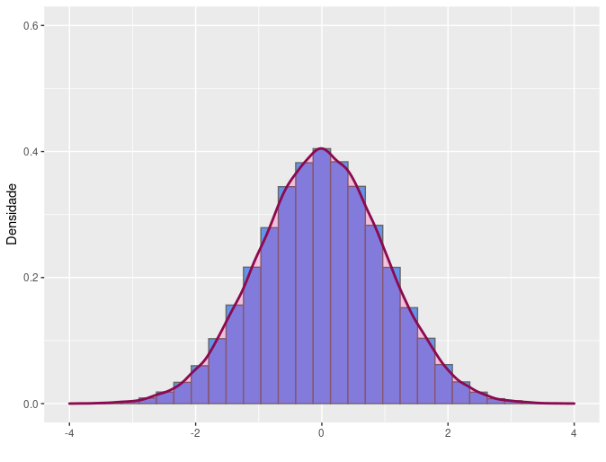


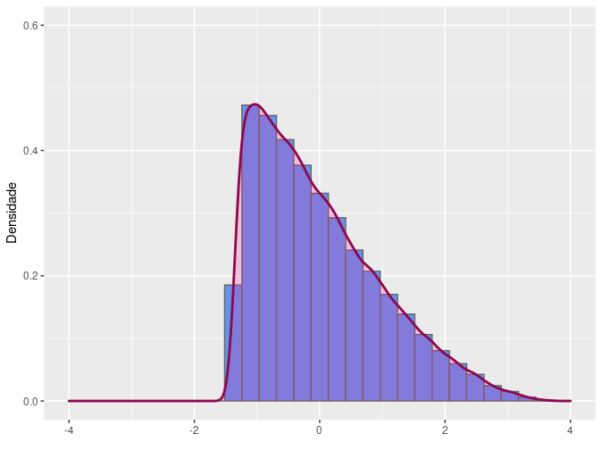
Coeficientes de assimetria amostrais diferentes de zero devem ser interpretados com cautela, uma vez que por se tratar de uma amostra não significa que necessariamente o comportamento da variável na população seja assimétrico. Testes estatísticos devem ser realizados para avaliar a hipotese de simetria da variável na população.
Ainda com respeito a forma da distribuição da variável, podemos avaliar o comportamento em suas caudas através do coeficiente de curtose amostral que se define por \(\frac{m_4}{m_2^{2}}\). Distribuições de variáveis com valor de curtose igual a 3 são denominadas mesocúrticas. Tomada muitas vezes como referência, a distribuição normal apresenta coeficiente de curtose igual a três. Distribuições com coeficiente de curtose menores que 3 são denominadas platicúrticas e apresentam caudas mais leves (“finas”) do que a da distribuição normal. Distribuições com coeficiente de curtose maiores que 3 são denominadas leptocúrticas e apresentam caudas mais pesadas (“grossas”) do que a da distribuição normal. A distribuição t-Student é um exemplo de distribuição leptocúrtica.
Na literatura é muito comum ser apresentado uma variante do coeficiente de curtose denominada excesso de curtose. Esse excesso é avaliado em relação a curtose do modelo normal por isso seu valor é calculado fazendo o coeficiente de curtose subtraído de 3. Dessa forma, o excesso de curtose em distribuições mesocúrticas é igual a zero, em distribuições leptocúrticas é maior que zero e em distribuições platicúrticas é menor que zero.

Ressalva similar feita ao coeficiente de assimetria deve ser considerado para o coeficiente de curtose ou de excesso de curtose. Um coeficiente de curtose amostral diferente de três ou, de forma equivalente, com excesso de curtose amostral diferente de zero, não implica necessariamente que a distribuição da variável na população possui caudas mais leves ou mais pesadas do que a da distribuição normal. Para que se possa fazer tal afirmação é necessária a realização de testes estatísticos inferenciais. Os coeficientes amostrais de assimetria e curtose tão somente nos dão uma medida da forma da distribuição de frequências e \(insights\) do comportamento da variável na população, que devem ser verificados via análise inferencial estatística.
No R, para obter essas medidas resumo vamos utilizar a função descr também do pacote summarytools. No comando abaixo pedimos ao R as medidas descritivas da variável quantitativa “idade”.
descr(dados$idade)Descriptive Statistics
dados$idade
N: 11523
idade
----------------- ----------
Mean 30.25
Std.Dev 7.04
Min 10.00
Q1 25.00
Median 30.00
Q3 35.00
Max 55.00
MAD 7.41
IQR 10.00
CV 0.23
Skewness 0.17
SE.Skewness 0.02
Kurtosis -0.10
N.Valid 11514.00
Pct.Valid 99.92Note que os nomes de algumas das estatísticas apresentadas pela função descr estão em inglês. \(Mean\) refere-se ao valor médio da variável analisada, \(Std.Dev\) corresponde ao desvio-padrão, IQR é o símbolo para o intervalo interquartil, MAD é o desvio-médio absoluto, \(Skewness\) é o coeficiente de assimetria, \(SE.Skewness\) é o erro-padrão do coeficiente de assimetria, \(Kurtosis\) é o coeficiente de excesso de curtose e \(N.Valid\) e \(Pct.Valid\) correspondem, respectivamente, ao número de observações válidas e seu percentual no conjunto de dados considerado para a variável.
Especificamente para a variável idade, podemos notar que das 11523 observações, apenas 11514 (99.92 %) foram consideradas válidas. Isso acontece porque nesse conjunto de dados, 9 pessoas não declararam a idade, ficando com a casela vazia (NA). Todas as medidas-resumo foram calculadas considerando apenas as observações válidas. Sendo assim, algumas análises que podem ser realizadas para a variável idade através da função descr são que a idade média dentre as observações válidas foi de 30,25 anos, com desvio-padrão de 7,04 anos. A menor idade observada foi de 10 anos e a máxima foi de 55 anos. 50% das mulheres analisadas tem idade inferior a 30 anos (mediana) e 25% delas tem idade superior a 35 anos (Q3). O coeficiente de assimetria foi 0.17 (com erro-padrão de 0.02), indicando que a distribuição de frequências da variável idade é levemente assimétrica à direita. O coeficiente de excesso de curtose foi -0.10 e o intervalo interquartil (Q3 - Q1) foi 10.
Se quiser que a tabela apresente apenas algumas medidas-resumo pré-selecionadas, podemos informar ao R por meio do argumento stats. Ainda, se quisermos que na tabela as medidas resumo fiquem na coluna, usamos o argumento transpose = TRUE, como segue:
descr(dados$idade,stats = c("min", "mean", "med","sd","max"), transpose = TRUE) #sd é o desvio padrão (standard deviation)Descriptive Statistics
dados$idade
N: 11523
Min Mean Median Std.Dev Max
----------- ------- ------- -------- --------- -------
idade 10.00 30.25 30.00 7.04 55.00Caso se tenha interesse em apresentar a natureza da variável e um \(preview\) gráfico da distribuição de frequências, podemos fazer uso da função dfSummary. O argumento method = "render" para a função print permite uma melhor apresentação visual dos gráficos em documentos do tipo R \(Markdown\).
print(dfSummary(dados$idade), method = "render")Data Frame Summary
dados
Dimensions: 11523 x 1Duplicates: 11476
| No | Variable | Stats / Values | Freqs (% of Valid) | Graph | Valid | Missing | ||||
|---|---|---|---|---|---|---|---|---|---|---|
| 1 | idade [numeric] |
|
46 distinct values |  |
11514 (99.9%) | 9 (0.1%) |
Generated by summarytools 1.0.1 (R version 4.2.1)
2023-01-23
Além do gráfico, uma informação adicional apresentada é que as 11514 observações válidas da variável idade estão distribuídas em 46 distintos valores.
Outro pacote bastante interessante para medidas descritivas é o modelsummary. Destacamos algumas funções desse pacote:
datasummary_skim: retorna as medidas descritivas das variáveis do banco de dados a depender do tipo identificado no argumento
type= (categorical ou numeric);datasummary: retorna as medidas descritivas das variáveis a depender de como monta os argumentos da função, permitindo retornar as medidas descritivas das variáveis quantitativas de interesse por categorias de outra(s) variável(is).
Para explorar a funcionalidade desse pacote e suas funções, vamos filtrar o banco de dados original considerando apenas as informações das mulheres gestantes e puérperas internadas em UTI.
dados_uti <- dados[!is.na(dados$dias_uti),]Vamos selecionar algumas variáveis do banco de dados dados_uti e organizá-las em um novo \(data.frame\).
library(dplyr)
dados_uti_res <- select(dados_uti,idade,cardiopati, faixa_et, evolucao, dias_uti)Para esses dados, vamos fazer algumas análises via pacote modelsummary. Assim,
library(modelsummary)Ao usar a função datasummary_skim, vamos obter as medidas descritivas das variáveis quantitativas (argumento type = "numeric") e das variáveis qualitativas (argumento type = "categorical"), respectivamente:
datasummary_skim(dados_uti_res,
type = "numeric",
histogram = FALSE)| Unique (#) | Missing (%) | Mean | SD | Min | Median | Max | |
|---|---|---|---|---|---|---|---|
| idade | 42 | 0 | 31.2 | 6.6 | 10.0 | 31.0 | 55.0 |
| dias_uti | 75 | 0 | 12.0 | 13.7 | 0.0 | 8.0 | 200.0 |
datasummary_skim(dados_uti_res,
type = "categorical", na.rm = FALSE)| N | % | ||
|---|---|---|---|
| cardiopati | sim | 182 | 7.8 |
| nao | 791 | 34.0 | |
| ignorado | 17 | 0.7 | |
| faixa_et | <20 | 98 | 4.2 |
| >=34 | 908 | 39.1 | |
| 20-34 | 1317 | 56.7 | |
| NA | 1 | 0.0 | |
| evolucao | cura | 1645 | 70.8 |
| obito | 623 | 26.8 | |
| obito por outras causas | 7 | 0.3 | |
| ignorado | 31 | 1.3 |
Como a variável faixa etária (faixa_et) foi declarada como fator, a função datasummary_skim apresenta 1 valor NA, indicando que apenas uma mulher que esteve em UTI não teve determinada sua faixa etária/idade. Para que as demais variáveis categóricas apresentem essa informação e não as deixe omitida, como no caso da variável cardiopatia, vamos precisar declarar essas variáveis como caracter e não como fator. Esse procedimento também será adotado para as demais variáveis categóricas.
dados_uti_res$cardiopati <- as.character(dados_uti_res$cardiopati)
dados_uti_res$evolucao <- as.character(dados_uti_res$evolucao)
datasummary_skim(dados_uti_res,
type = "categorical", na.rm = FALSE)| N | % | ||
|---|---|---|---|
| cardiopati | ignorado | 17 | 0.7 |
| nao | 791 | 34.0 | |
| sim | 182 | 7.8 | |
| NA | 1334 | 57.4 | |
| faixa_et | <20 | 98 | 4.2 |
| >=34 | 908 | 39.1 | |
| 20-34 | 1317 | 56.7 | |
| NA | 1 | 0.0 | |
| evolucao | cura | 1645 | 70.8 |
| ignorado | 31 | 1.3 | |
| obito | 623 | 26.8 | |
| obito por outras causas | 7 | 0.3 | |
| NA | 18 | 0.8 |
Uma das funções mais interessantes do pacote modelsummaryé a datasummary, pois ela nos permite analisar variáveis quantitativas separada pelas categorias (grupos) de uma variável qualitativa. Por exemplo, suponha que tenhamos interesse em analisar o tempo de internação em UTI, estratificado pelos grupos faixa-etária e evolução do caso, fazendo uso das seguintes medidas descritivas: média, mediana, desvio padrão, mínimo, máximo e tamanho da amostra válido (sem considerar observações faltantes para a variável em questão). O primeiro passo é declarar as medidas-resumo de interesse como funções. O argumento na.rm = TRUE indica que o cálculo da função deve ser realizado excluindo os valores faltantes da variável.
media <- function(x) mean(x, na.rm = TRUE)
mediana <- function(x) median(x, na.rm = TRUE)
dp <- function(x) sd(x, na.rm = TRUE)
minimo <- function(x) min(x, na.rm = TRUE)
maximo <- function(x) max(x, na.rm = TRUE)
n <- function(x) sum(!is.na(x))datasummary( (evolucao + faixa_et) ~
dias_uti*(n+media+dp+minimo+mediana+maximo), data = dados_uti_res)| n | media | dp | minimo | mediana | maximo | ||
|---|---|---|---|---|---|---|---|
| evolucao | cura | 1645 | 10.78 | 12.01 | 0.00 | 6.00 | 107.00 |
| ignorado | 31 | 7.94 | 10.19 | 0.00 | 4.00 | 40.00 | |
| obito | 623 | 15.18 | 15.46 | 0.00 | 12.00 | 200.00 | |
| obito por outras causas | 7 | 51.71 | 64.62 | 2.00 | 25.00 | 183.00 | |
| faixa_et | <20 | 98 | 10.55 | 11.07 | 0.00 | 6.00 | 58.00 |
| >=34 | 908 | 12.91 | 14.66 | 0.00 | 8.00 | 200.00 | |
| 20-34 | 1317 | 11.55 | 13.15 | 0.00 | 8.00 | 183.00 |
Agora veja como fica se eu considerar as medidas descritivas de mais de uma variável quantitativas por duas variáveis qualitativas, selecionando apenas as medidas descritivas, média, desvio-padrão e número de casos observados:
datasummary((evolucao + cardiopati) ~
(dias_uti + idade)*(n+media+dp), data = dados_uti_res)| n | media | dp | n | media | dp | ||
|---|---|---|---|---|---|---|---|
| evolucao | cura | 1645 | 10.78 | 12.01 | 1645 | 31.05 | 6.57 |
| ignorado | 31 | 7.94 | 10.19 | 31 | 31.29 | 7.66 | |
| obito | 623 | 15.18 | 15.46 | 622 | 31.61 | 6.70 | |
| obito por outras causas | 7 | 51.71 | 64.62 | 7 | 32.14 | 7.65 | |
| cardiopati | ignorado | 17 | 8.76 | 9.62 | 17 | 34.00 | 6.20 |
| nao | 791 | 12.74 | 13.30 | 791 | 30.96 | 6.82 | |
| sim | 182 | 14.12 | 14.28 | 182 | 33.66 | 6.86 |
4.2 Tabelas cruzadas - duas variáveis qualitativas
Tabelas cruzadas ou tabelas de contingência são tabelas que apresentam frequências de duas ou mais variáveis qualitativas conjuntamente.
No R, para obter tabelas cruzadas, vamos utilizar a função ´ctable´ também do pacote ´summarytools´. No comando abaixo, pedimos ao R uma tabela cruzada entre as variáveis qualitativas evolução (evolucao) e faixa etária (faixa_et) no banco de dados otiginal.
ctable(dados$evolucao,y=dados$obesidade,prop="t")Cross-Tabulation, Total Proportions
evolucao * obesidade
Data Frame: dados
| obesidade | sim | nao | ignorado | Total | ||
| evolucao | ||||||
| cura | 555 (4.82%) | 2897 (25.1%) | 95 (0.82%) | 5943 (51.58%) | 9490 ( 82.4%) | |
| obito | 199 (1.73%) | 446 ( 3.9%) | 14 (0.12%) | 587 ( 5.09%) | 1246 ( 10.8%) | |
| obito por outras causas | 3 (0.03%) | 13 ( 0.1%) | 0 (0.00%) | 6 ( 0.05%) | 22 ( 0.2%) | |
| ignorado | 10 (0.09%) | 71 ( 0.6%) | 0 (0.00%) | 206 ( 1.79%) | 287 ( 2.5%) | |
| 23 (0.20%) | 129 ( 1.1%) | 4 (0.03%) | 322 ( 2.79%) | 478 ( 4.1%) | ||
| Total | 790 (6.86%) | 3556 (30.9%) | 113 (0.98%) | 7064 (61.30%) | 11523 (100.0%) |
O argumento prop indica a forma como deve ser calculada a proporção. Por padrão, a proporção é sempre calculada tendo-se como referencial o total em linha, ou seja, prop = "r". Outras opções são prop = "t", indicando que a proporção é em relação ao número total de observações e prop = "c" se o referencial for o total por coluna.
ctable(dados$evolucao,y=dados$obesidade,prop="r")Cross-Tabulation, Row Proportions
evolucao * obesidade
Data Frame: dados
| obesidade | sim | nao | ignorado | Total | ||
| evolucao | ||||||
| cura | 555 ( 5.8%) | 2897 (30.5%) | 95 (1.0%) | 5943 (62.6%) | 9490 (100.0%) | |
| obito | 199 (16.0%) | 446 (35.8%) | 14 (1.1%) | 587 (47.1%) | 1246 (100.0%) | |
| obito por outras causas | 3 (13.6%) | 13 (59.1%) | 0 (0.0%) | 6 (27.3%) | 22 (100.0%) | |
| ignorado | 10 ( 3.5%) | 71 (24.7%) | 0 (0.0%) | 206 (71.8%) | 287 (100.0%) | |
| 23 ( 4.8%) | 129 (27.0%) | 4 (0.8%) | 322 (67.4%) | 478 (100.0%) | ||
| Total | 790 ( 6.9%) | 3556 (30.9%) | 113 (1.0%) | 7064 (61.3%) | 11523 (100.0%) |
ctable(dados$evolucao,y=dados$obesidade,prop="c")Cross-Tabulation, Column Proportions
evolucao * obesidade
Data Frame: dados
| obesidade | sim | nao | ignorado | Total | ||
| evolucao | ||||||
| cura | 555 ( 70.3%) | 2897 ( 81.5%) | 95 ( 84.1%) | 5943 ( 84.13%) | 9490 ( 82.4%) | |
| obito | 199 ( 25.2%) | 446 ( 12.5%) | 14 ( 12.4%) | 587 ( 8.31%) | 1246 ( 10.8%) | |
| obito por outras causas | 3 ( 0.4%) | 13 ( 0.4%) | 0 ( 0.0%) | 6 ( 0.08%) | 22 ( 0.2%) | |
| ignorado | 10 ( 1.3%) | 71 ( 2.0%) | 0 ( 0.0%) | 206 ( 2.92%) | 287 ( 2.5%) | |
| 23 ( 2.9%) | 129 ( 3.6%) | 4 ( 3.5%) | 322 ( 4.56%) | 478 ( 4.1%) | ||
| Total | 790 (100.0%) | 3556 (100.0%) | 113 (100.0%) | 7064 (100.00%) | 11523 (100.0%) |
Note que em todas as tabelas de contingência há a existência de linha e coluna sem nome, isso acontece pois esta linha e/ou coluna está resumindo os valores faltantes (NA). Por exemplo, a distribuição de frequências da variável evolução para os que não preencheram o \(status\) de obesidade nos diz que 5943 (84.13%) foram curados, 587 (8.31%) faleceram, 6 (0.08%) viram a óbito por motivos outros que não COVID-19, 206 (2.92%) ignoraram essa informação (preencheram com 9) e 322 (4.56%) deixaram em branco não só a informação da obesidade, mas também o desfecho final da evolução. Para obter a tabela de contingência apenas dos casos válidos simultâneos em ambas as variáveis, insira o argumento useNA = "no"".
ctable(dados$evolucao,y=dados$obesidade, prop="c", useNA = "no")Cross-Tabulation, Column Proportions
evolucao * obesidade
Data Frame: dados
| obesidade | sim | nao | ignorado | Total | |
| evolucao | |||||
| cura | 555 ( 72.4%) | 2897 ( 84.5%) | 95 ( 87.2%) | 3547 ( 82.4%) | |
| obito | 199 ( 25.9%) | 446 ( 13.0%) | 14 ( 12.8%) | 659 ( 15.3%) | |
| obito por outras causas | 3 ( 0.4%) | 13 ( 0.4%) | 0 ( 0.0%) | 16 ( 0.4%) | |
| ignorado | 10 ( 1.3%) | 71 ( 2.1%) | 0 ( 0.0%) | 81 ( 1.9%) | |
| Total | 767 (100.0%) | 3427 (100.0%) | 109 (100.0%) | 4303 (100.0%) |
Caso não haja interesse em se apresentar as proporções, basta considerar o argumento prop="none", da seguinte forma:
ctable(dados$evolucao,y=dados$obesidade,prop="none")Cross-Tabulation
evolucao * obesidade
Data Frame: dados
| obesidade | sim | nao | ignorado | Total | ||
| evolucao | ||||||
| cura | 555 | 2897 | 95 | 5943 | 9490 | |
| obito | 199 | 446 | 14 | 587 | 1246 | |
| obito por outras causas | 3 | 13 | 0 | 6 | 22 | |
| ignorado | 10 | 71 | 0 | 206 | 287 | |
| 23 | 129 | 4 | 322 | 478 | ||
| Total | 790 | 3556 | 113 | 7064 | 11523 |
Para tabelas de contingência com mais de duas variáveis, podemos adotar o seguinte procedimento:
with(dados, stby(data = list(x = evolucao, y = obesidade),
INDICES = faixa_et, FUN = ctable))Cross-Tabulation, Row Proportions
evolucao * obesidade
Data Frame: dados
Group: faixa_et = <20
| obesidade | sim | nao | ignorado | Total | ||
| evolucao | ||||||
| cura | 12 (2.0%) | 214 (35.0%) | 2 (0.3%) | 383 (62.7%) | 611 (100.0%) | |
| obito | 3 (6.5%) | 22 (47.8%) | 0 (0.0%) | 21 (45.7%) | 46 (100.0%) | |
| obito por outras causas | 0 (0.0%) | 2 (66.7%) | 0 (0.0%) | 1 (33.3%) | 3 (100.0%) | |
| ignorado | 0 (0.0%) | 7 (20.0%) | 0 (0.0%) | 28 (80.0%) | 35 (100.0%) | |
| 0 (0.0%) | 2 (10.5%) | 0 (0.0%) | 17 (89.5%) | 19 (100.0%) | ||
| Total | 15 (2.1%) | 247 (34.6%) | 2 (0.3%) | 450 (63.0%) | 714 (100.0%) |
Group: faixa_et = >=34
| obesidade | sim | nao | ignorado | Total | ||
| evolucao | ||||||
| cura | 231 ( 7.5%) | 972 (31.5%) | 37 (1.2%) | 1842 (59.8%) | 3082 (100.0%) | |
| obito | 73 (13.9%) | 182 (34.7%) | 6 (1.1%) | 263 (50.2%) | 524 (100.0%) | |
| obito por outras causas | 1 (12.5%) | 6 (75.0%) | 0 (0.0%) | 1 (12.5%) | 8 (100.0%) | |
| ignorado | 1 ( 1.2%) | 22 (25.9%) | 0 (0.0%) | 62 (72.9%) | 85 (100.0%) | |
| 12 ( 7.4%) | 44 (27.0%) | 0 (0.0%) | 107 (65.6%) | 163 (100.0%) | ||
| Total | 318 ( 8.2%) | 1226 (31.7%) | 43 (1.1%) | 2275 (58.9%) | 3862 (100.0%) |
Group: faixa_et = 20-34
| obesidade | sim | nao | ignorado | Total | ||
| evolucao | ||||||
| cura | 310 ( 5.4%) | 1710 (29.5%) | 56 (1.0%) | 3715 (64.2%) | 5791 (100.0%) | |
| obito | 123 (18.2%) | 242 (35.9%) | 8 (1.2%) | 302 (44.7%) | 675 (100.0%) | |
| obito por outras causas | 2 (18.2%) | 5 (45.5%) | 0 (0.0%) | 4 (36.4%) | 11 (100.0%) | |
| ignorado | 9 ( 5.4%) | 42 (25.1%) | 0 (0.0%) | 116 (69.5%) | 167 (100.0%) | |
| 11 ( 3.7%) | 82 (27.9%) | 4 (1.4%) | 197 (67.0%) | 294 (100.0%) | ||
| Total | 455 ( 6.6%) | 2081 (30.0%) | 68 (1.0%) | 4334 (62.5%) | 6938 (100.0%) |
4.3 Gráficos
Um gráfico pode ser a maneira mais adequada para resumir e apresentar um conjunto de dados. Tem a vantagem de facilitar a compreensão de uma determinada situação que queira ser descrita, permitindo uma interpretação rápida e visual das suas principais características.
A visualização dos dados é uma etapa importantíssima da análise estatística, pois é também a partir dela que criamos a intuição necessária para escolher o teste ou modelo mais adequado para o nosso problema.
4.3.1 Pacote ggplot2
Um pacote maravilhoso para gráficos no R é o ggplot2. A ideia por trás desse pacote é um gráfico pode ser entendido como um mapeamento dos dados a partir de atributos estéticos (cores, formas, tamanho) de formas geométricas (pontos, linhas, barras).
library(ggplot2)4.3.1.1 Atributos estéticos
A função aes descreve como as variáveis são mapeadas em aspectos visuais. Para isso, vamos precisar indicar qual variável será representada no eixo x, qual será representada no eixo y, a cor e o tamanho dos componentes geométricos, etc. de formas geométricas a serem pré-definidas pelos geoms. A escolha da forma geométrica vai depender da natureza das variáveis a serem analisadas e será discutido na sequencia. Além disso, os aspectos que podem ou devem ser mapeados vão depender do tipo de gráfico que estamos querendo construir. Basicamente, no pacote ´ggplot2´ temos as seguintes formas geométricas:
geom_point() gera gráficos de dispersão transformando pares (x,y) em pontos.
geom_line: para retas definidas por pares (x,y);
geom_abline: para retas definidas por um intercepto e uma inclinação;
geom_hline: para retas horizontais;
geom_bar: para barras;
geom_histogram: para histogramas;
geom_boxplot: para boxplots;
geom_density: para densidades;
geom_area: para áreas.
Para cada uma das formas geométricas podemos estabelecer aspectos visuais que podem melhorar a visualização dos dados. Aspectos visuais mais utilizados:
color: altera a cor de formas que não têm área (pontos e retas);
fill: altera a cor de formas com área (barras, caixas, densidades, áreas);
size: altera o tamanho de formas;
type: altera o tipo da forma, geralmente usada para pontos;
linetype: altera o tipo da linha.
Para exemplificar os diferentes tipos de gráficos associando-os a variáveis de diferentes naturezas, vamos considerar o banco de dados de COVID-19 em gestantes e puérperas. De maneira geral, é necessário seguir alguns passos gerais para a construção de qualquer gráfico via ggplot2, a saber:
- Passo 1: sempre iniciar a construção chamando a função
ggplot. - Passo 2: especificar na função
ggploto objeto que acomoda o banco de dados e apresenta a variável de interesse para a qual se quer fazer o gráfico. Esse objeto deve ser do tipo \(dataframe\). - Passo 3: informar as variáveis a serem consideradas no eixo horizontal e vertical via função
aese demais funções estéticas dependentes das variáveis.
- Passo 4: informar o tipo de gráfico que se quer fazer (barra, histograma, \(boxplot\), etc).
4.3.1.2 Gráficos para variáveis qualitativas e quantitativas discretas com poucos valores diferentes
Um dos gráficos mais utilizados para a apresentação visual de variáveis qualitativas e quantitativas discretas com poucas observações diferentes é o gráfico de barras. Para construí-lo, é necessário utilizar no Passo 4 a função geom_bar.
A seguir apresentamos um exemplo de gráfico de barras para a variável qualitativa evolução dos casos relacionado a gestantes e puérperas hospitalizadas por COVID-19.
ggplot(dados, aes(x = evolucao)) +
geom_bar(fill = "blue") +
labs(x = "Tipos de evolução", y = "Número de casos")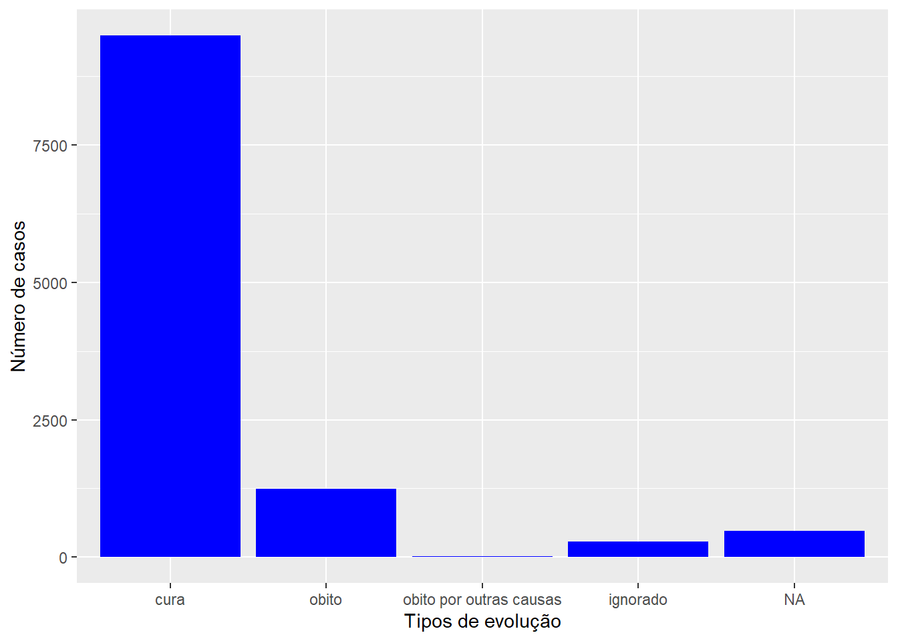
Note que a função labs é responsável não só por inserir os títulos nos eixos, como poder visto no gráfico anterior, mas também títulos e subtítulos. Essa função pode ser sempre utilizada na construção de gráficos via pacote ggplot2, independente do tipo de gráfico a ser apresentado. Por exemplo,
ggplot(dados, aes(x = evolucao)) +
geom_bar(fill = "blue") +
labs(x = "Tipos de evolução", y = "Número de casos", title = "Evolução dos casos hospitalizados por COVID-19", subtitle = "Mulheres gestantes e puérperas")
No código a seguir apresentamos como apresentar as barras organizadas de maneira decrescente. Note que há uma mudança na ordem das barras referente a óbitos e óbitos por outras causas. Além disso, independente da disposição escolhida para as barras, a categoria que representa as mulheres que não tiveram sua evolução preenchida na notificação (NA) sempre é apresentada como última barra, ainda que tenha uma alta frequência em relação as outras categorias.
ggplot(dados, aes(x = reorder(evolucao, evolucao, function(x)-length(x)))) +
geom_bar(fill = "blue") +
labs(x = "Tipos de evolução", y = "Número de casos", title = "Evolução dos casos hospitalizados por COVID-19", subtitle = "Mulheres gestantes e puérperas")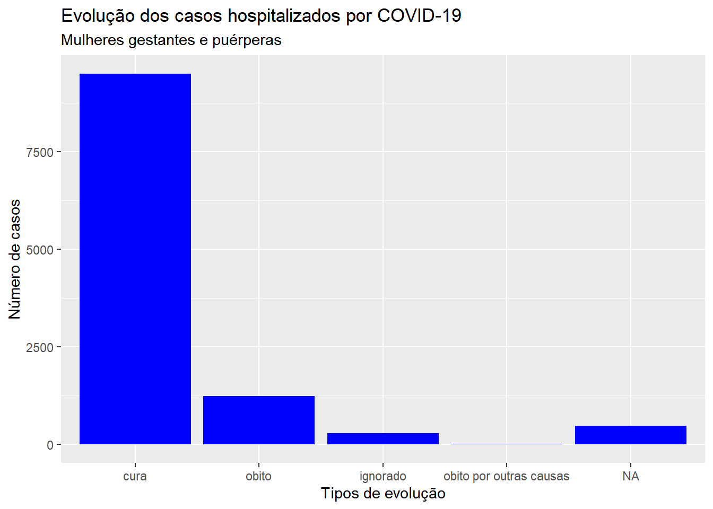
Caso o interesse seja nas barras dispostas de maneira crescente, com exceção do NA, basta reordenar a variável da seguinte forma:
ggplot(dados, aes(x = reorder(evolucao, evolucao, function(x) length(x)))) +
geom_bar(fill = "blue") +
labs(x = "Tipos de evolução", y = "Número de casos", title = "Evolução dos casos hospitalizados por COVID-19", subtitle = "Mulheres gestantes e puérperas")
A variável evolução (evolucao) pode ser classificada como qualitativa nominal e, portanto, estamos livres para escolher a ordem com que as categorias são apresentadas. Vamos ver agora o caso da variável faixa-etária (faixa_et) que, intrinsecamente, é uma variável qualitativa ordinal. Se utilizássemos o mesmo código considerado inicialmente para a variável evolução, obteríamos o seguinte gráfico:
ggplot(dados, aes(x = faixa_et)) +
geom_bar(fill = "purple") +
labs(x = "Faixa etária", y = "Número de casos", title = "Faixa etária das hospitalizadas por COVID-19", subtitle = "Mulheres gestantes e puérperas")
Note que a barra para as mulheres com pelo menos 34 anos e a barra que representa as mulheres com idade de 20 (incluso) a 34 anos estão em posições trocadas, não respeitando a ordenação natural da variável.
# Especificando a ordem dos níveis do fator
dados$faixa_et = factor(dados$faixa_et, levels = c('<20', '20-34', '>=34'))
# Gerando o gráfico
ggplot(dados, aes(x = faixa_et)) +
geom_bar(fill = "purple") +
labs(x = "Faixa etária", y = "Número de casos", title = "Faixa etária das hospitalizadas por COVID-19", subtitle = "Mulheres gestantes e puérperas")Todos os gráficos de barra apresentados anteriormente apresentaram no eixo vertical a contagem de indivíduos por categoria. vejamos agora o código para apresentar o gráfico de barras com as frequências relativas.
ggplot(dados, aes(x = faixa_et, y = (..count..)/sum(..count..))) +
geom_bar(fill="purple") +
labs(x = "Faixa etária", y = "Frequência relativa", title = "Faixa etária das hospitalizadas por COVID-19", subtitle = "Mulheres gestantes e puérperas")Se o interesse é apresentar o gráfico em termos percentuais, basta acrescentar a função scale_y_continuous com o argumento labels=scales::percent.
ggplot(dados, aes(x = faixa_et, y = (..count..)/sum(..count..))) +
geom_bar(fill="purple") +
scale_y_continuous(labels=scales::percent) +
labs(x = "Faixa etária", y = "Porcentagem", title = "Faixa etária das hospitalizadas por COVID-19", subtitle = "Mulheres gestantes e puérperas")
Para inserir o percentual de cada categoria no gráfico, incluímos no código anterior a função geom_text, com o argumento lab declarando o cálculo da frequência arredondado a duas casas decimais. O argumento vjust indica a que altura se quer que o texto com o percentual apareça no gráfico. Quanto mais negativo for o valor, mais acima da barra estará o texto com o percentual. Se vjust = 0 apresenta o texto encima da barra e, quanto mais positivo for o valor de vjust escolhido, mais interno da barra ficará o texto.
ggplot(dados, aes(x = faixa_et, y = (..count..)/sum(..count..))) +
geom_bar(fill="purple") +
geom_text(aes(label = round((((..count..)/sum(..count..))*100), 2)), stat= "count", vjust = -0.1)+
scale_y_continuous(labels=scales::percent) +
labs(x = "Faixa etária", y = "Porcentagem", title = "Faixa etária das hospitalizadas por COVID-19", subtitle = "Mulheres gestantes e puérperas")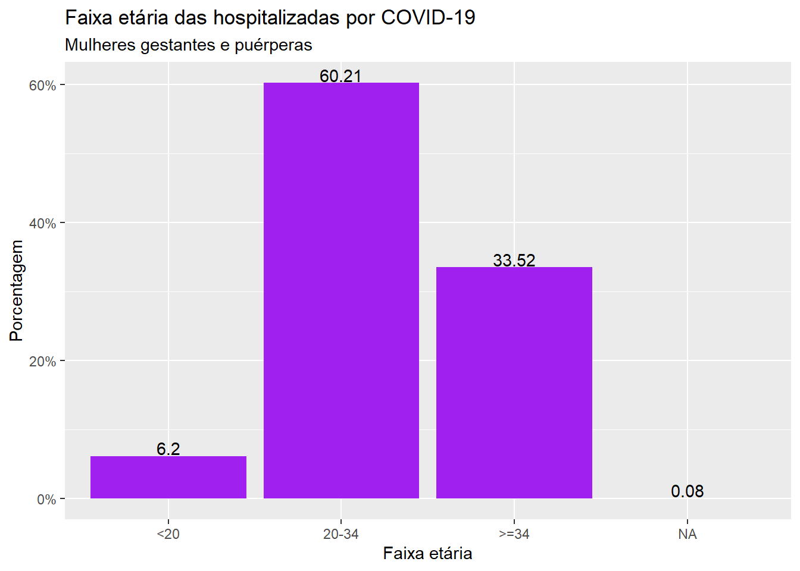
O argumento width da função geom_bar permite controlar a espessura da barra através de valores variando de 0 a 1, sendo que o tamanho 1 representa o maior tamanho.
ggplot(dados, aes(x = faixa_et, y = (..count..)/sum(..count..))) +
geom_bar(fill="purple", width=0.2) +
geom_text(aes(label = round((((..count..)/sum(..count..))*100), 2)), stat= "count", vjust = -0.1)+
scale_y_continuous(labels=scales::percent) +
labs(x = "Faixa etária", y = "Porcentagem", title = "Faixa etária das hospitalizadas por COVID-19", subtitle = "Mulheres gestantes e puérperas")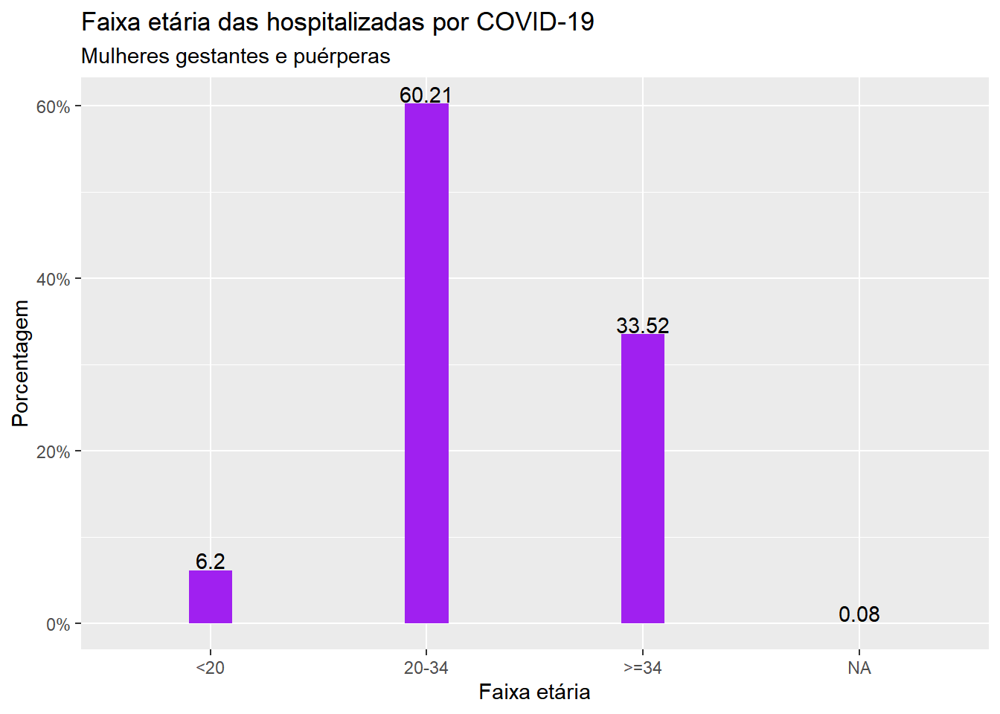
Para mudar a disposição das barras de vertical para horizontal, basta acrescentar basta inserir a função coord_flip(). Para diminuir o tamanho da letra, ajustamos na função geom_text alterando os valores do argumento size.
ggplot(dados, aes(x = faixa_et, y = (..count..)/sum(..count..))) +
geom_bar(fill="purple") +
geom_text(aes(label = round((((..count..)/sum(..count..))*100), 2)), stat= "count", hjust = 0, size = 3) +
scale_y_continuous(labels=scales::percent) +
labs(x = "Faixa etária", y = "Porcentagem", title = "Faixa etária das hospitalizadas por COVID-19", subtitle = "Mulheres gestantes e puérperas")+
coord_flip()
Vejamos agora como construir um gráfico de barras com duas variáveis qualitativas conjuntamente. Para exemplificar, vamos considerar as variáveis faixa etária (faixa_et) e cardiopatia (cardiopat). Nosso interesse é analisar a distribuição da faixa-etária estratificada pelas categorias da variável cardiopatia que, como vimos antes, podem assumir os resultados “sim”, “não”, “ignorado” e “NA”.
ggplot(dados, aes(x = faixa_et, group = cardiopati)) +
geom_bar(aes(y = ..prop..), stat = "count", fill="green4") +
labs(x = "Faixa etária", y = "Porcentagem", title = "Faixa etária das hospitalizadas por COVID-19 pela presença de cardiopatia", subtitle = "Mulheres gestantes e puérperas")+
scale_y_continuous(labels=scales::percent) +
facet_grid(~cardiopati)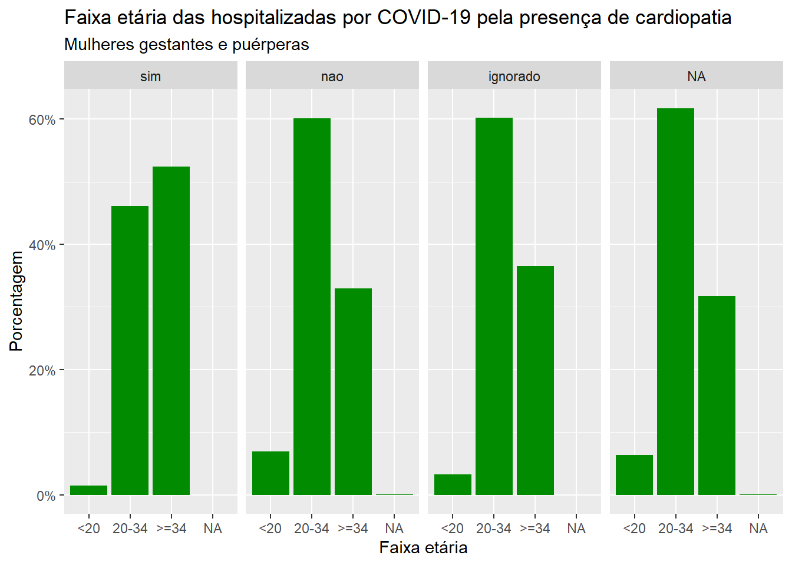
O próximo código apresenta o gráfico anterior com as porcentagens inseridas na figura.
ggplot(dados, aes(x = faixa_et, group = cardiopati)) +
geom_bar(aes(y = ..prop..), stat = "count", fill="green4") +
geom_text(aes(label = scales::percent(..prop.., accuracy = 0.1), y= ..prop..), stat = "count", vjust = -.1) +
labs(x = "Faixa etária", y = "Porcentagem", title = "Faixa etária das hospitalizadas por COVID-19 pela presença de cardiopatia", subtitle = "Mulheres gestantes e puérperas")+
scale_y_continuous(labels=scales::percent) +
facet_grid(~cardiopati)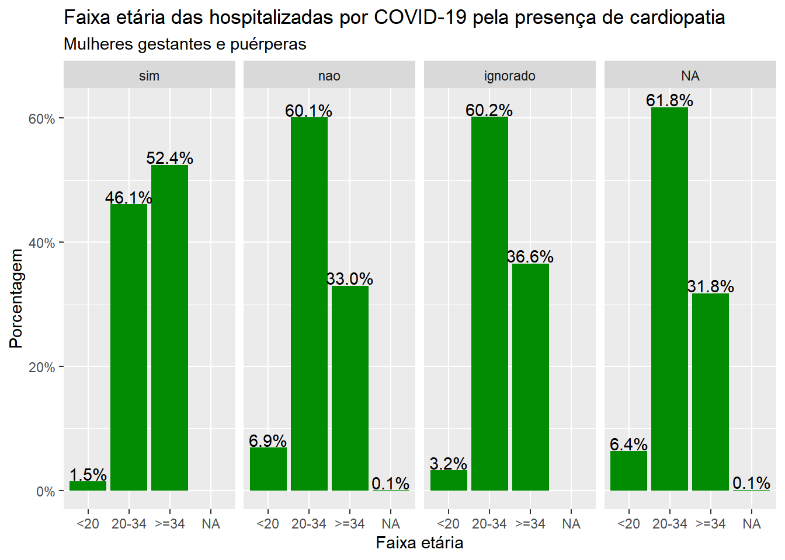
Vamos agora colocar cada categoria com a sua própria cor, a fim de facilitar a comparação. Para isso, vamos considerar o argumento fill = factor(..x..) na função geom_bar. Como as categorias da variável faixa-etária são autoexplicativas, o termo theme(legend.position="none") for inserido na construção do gráfico para se evitar a criação de uma nova legenda para as cores relacionadas as faixas de idade, evitando assim repetição de informação.
ggplot(dados, aes(x=faixa_et, group = cardiopati)) +
geom_bar(aes(y = ..prop.., fill = factor(..x..)), stat="count") +
geom_text(aes(label = scales::percent(..prop.., accuracy = 0.1), y= ..prop..), stat= "count", vjust = -.1) +
labs(x = "Faixa etária", y = "Porcentagem", title = "Faixa etária das hospitalizadas por COVID-19 pela presença de cardiopatia", subtitle = "Mulheres gestantes e puérperas")+
theme(legend.position="none")+
scale_y_continuous(labels=scales::percent) +
facet_grid(~cardiopati)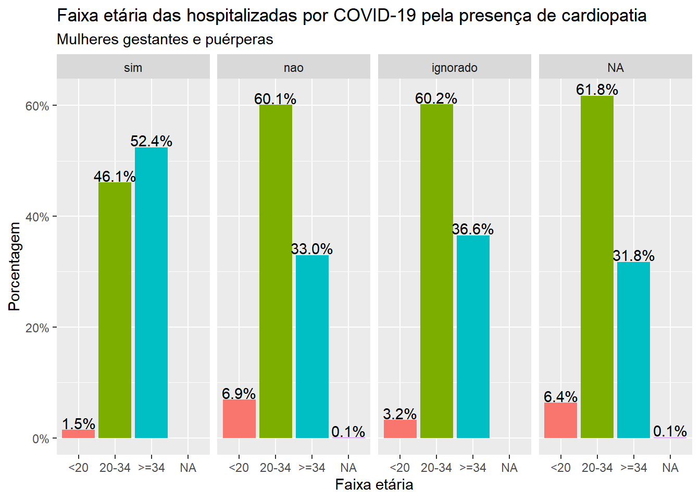
A escala de cores utilizada por padrão pela função geom_bar nem sempre atende a todos os públicos. O pacote viridis do R apresenta escalas de cores projetadas para melhorar a legibilidade dos gráficos para leitores com formas comuns de daltonismo e/ou deficiência em visão de cores. Para usá-lo, devemos inserir a função scale_fill_manual(values = c(viridis(4))), com o valor 4 representando as 4 categorias da faixa etária.
library(viridis)
ggplot(dados, aes(x=faixa_et, group = cardiopati)) +
geom_bar(aes(y = ..prop.., fill = factor(..x..)), stat="count") +
geom_text(aes(label = scales::percent(..prop.., accuracy = 0.1), y= ..prop..), stat= "count", vjust = -.1) +
labs(x = "Faixa etária", y = "Porcentagem", title = "Faixa etária das hospitalizadas por COVID-19 pela presença de cardiopatia", subtitle = "Mulheres gestantes e puérperas")+
theme(legend.position="none")+
scale_y_continuous(labels=scales::percent) +
scale_fill_manual(values = c(viridis(4))) +
facet_grid(~cardiopati)
Vários dos gráficos aqui mencionados podem construídos fazendo usos de outras funções e código do pacote do ggplot2. Especificamente sobre o gráfico de barras, na página (http://www.sthda.com/english/wiki/ggplot2-barplots-quick-start-guide-r-software-and-data-visualization#barplot-of-counts) podemos encontrar outras interessantes customizações gráficas que podem ser implementadas via pacote ggplot2.
4.3.1.3 Gráficos para variáveis quantitativas
Todos os códigos apresentados anteriormente podem ser usados quando a variável de interesse é quantitativa discreta com poucos valores diferentes. No caso de haver muitos diferentes valores para a variável quantitativa discreta, gráficos do tipo histograma costumam ser mais informativos. Vamos apresentar agora ferramentas para a construção de gráficos para esse tipo de variável e para variáveis quantitativas contínuas. Todos os gráficos a serem construídos daqui para frente farão uso da paleta viridis. Vejamos a construção do histograma de densidades para a variável idade.
A função considerada agora é geom_histogram. O argumento y = ..density.. indica que queremos apresentar o histograma de densidades, bins = 15 refere-se ao número de barras contíguas que queremos que o gráfico apresente, ´fill´ designa a cor a preencher o gráfico e color é a cor da linha das barras.
ggplot(dados, aes(x=idade)) +
geom_histogram(aes(y = ..density..), bins = 15, fill = viridis(1), color = "black") +
labs(x = "Idade", y = "Densidade", title = "Histograma de densidades das idades de hospitalizadas por COVID-19", subtitle = "Mulheres gestantes e puérperas")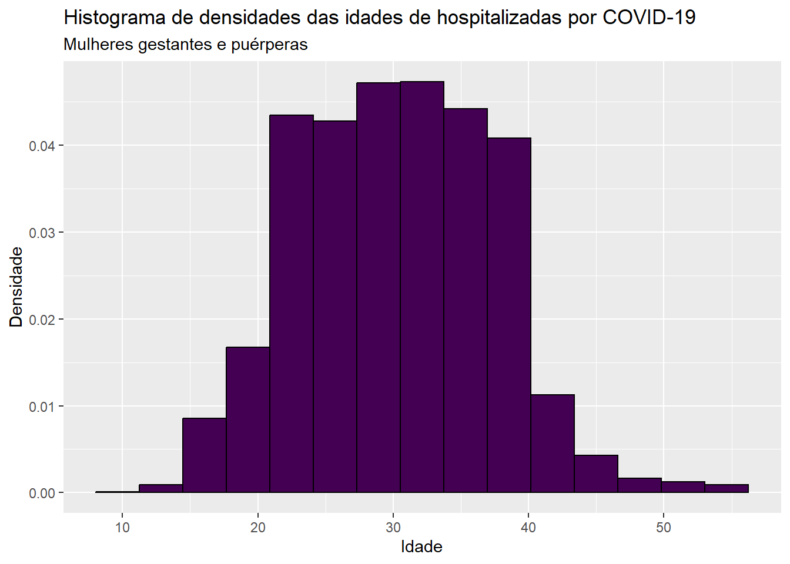
Enquanto medida, densidade corresponde a razão entre o número de casos contabilizados em intervalo e a amplitude do intervalo. Uma das vantagens em considerar o histograma de densidades e não o histograma de frequências é que a área total sob o gráfico corresponde a 1, deixando o gráfico na mesma escala de funções de densidade. Por exemplo, na figura a seguir inserimos uma versão alisada empírica do histograma. O argumento alpha na função geom_density controla o nível de transparência das cores preenchidas no histograma alisado e varia de 0 a 1, com 1 representando a cor sólida.
ggplot(dados, aes(x=idade)) +
geom_histogram(aes(y = ..density..), bins = 15, fill = viridis(1), color = "black") +
geom_density(fill = "grey55", color = "grey80", alpha = 0.2) +
labs(x = "Idade", y = "Densidade", title = "Histograma de densidades das idades de hospitalizadas por COVID-19 ", subtitle = "Mulheres gestantes e puérperas")
No código a seguir apresentamos uma maneira de construir o histograma de densidades de uma variável quantitativa nas diferentes categorias de uma variável qualitativa. Aqui a variável qualitativa refere-se a informações sobre o \(status\) de cardiopatia e a variável quantitativa considerada foi a idade. Para facilitar a comparação das diferentes faixas de valores da variável quantitativa entre as categorias, vamos inserir uma escala inserir uma escala de cores entre as faixas de valores, deixando o gráfico com um aspecto bastante atrativo e informativo. O argumento considerado na função geom_density é fill = ..x.., informando que o preenchimento do histograma será realizado nas faixas de valores da variável quantitativa. Para a escala de cores, inserimos a função scale_fill_gradientn(colours = c(viridis(15))), em que o valor 15 corresponde ao número de barras contíguas (bins = 15) considerado no histograma.
ggplot(dados, aes(x=idade)) +
geom_histogram(aes(y = ..density.., fill=..x..), bins = 15, color = "black") +
geom_density(fill = "grey55", color = "grey80", alpha = 0.2) +
labs(x = "Idade", y = "Densidade", title = "Histogramas de densidades das idades fixado status de cardiopatia ", subtitle = "Gestantes e puérperas hospitalizadas por COVID-19")+
scale_fill_gradientn(colours = c(viridis(15)))+
theme(legend.position="none")+
facet_grid(~cardiopati)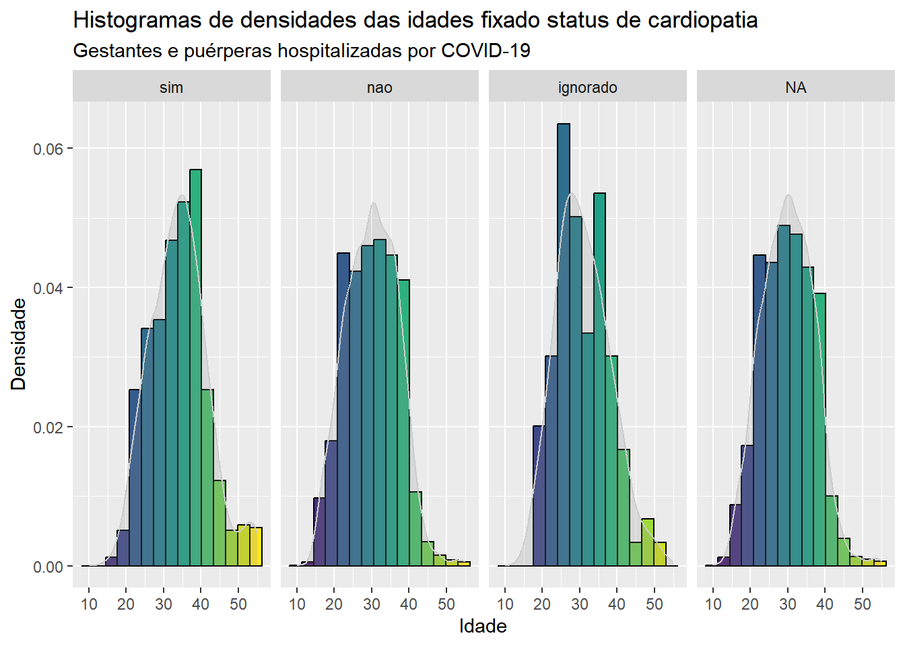
Para que os histogramas sejam dispostos um abaixo do outro, basta substituir a função facet_grid(~cardiopati) por facet_wrap(~cardiopati, ncol=1).
ggplot(dados, aes(x=idade)) +
geom_histogram(aes(y = ..density.., fill=..x..), bins = 15, color = "black") +
geom_density(fill = "grey55", color = "grey80", alpha = 0.2) +
labs(x = "Idade", y = "Densidade", title = "Histogramas de densidades das idades fixado status de cardiopatia ", subtitle = "Gestantes e puérperas hospitalizadas por COVID-19")+
scale_fill_gradientn(colours = c(viridis(15)))+
theme(legend.position="none")+
facet_wrap(~cardiopati, ncol=1)
Caso se queira apresentar os histogramas alisados sobrepostos por categoria, pode-se usar o código proposto na sequência.
ggplot(dados, aes(x = idade, fill = cardiopati)) +
geom_density(alpha = 0.5) +
labs(x = "Idade", y = "Densidade", title = "Histogramas alisados das idades pelo status de cardiopatia", subtitle = "Gestantes e puérperas hospitalizadas por COVID-19") +
scale_fill_manual(values = c(viridis(3)), name = "Cardiopatia")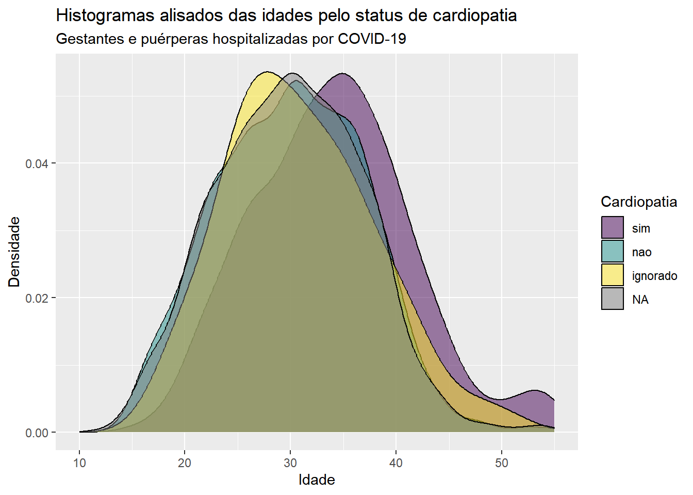
Um outro gráfico muito utilizado na apresentação de uma variável quantitativa é o boxplot que apresenta, visualmente, os valores mínimo, primeiro quartil (Q1), mediana ou segundo quartil (Q2), terceiro quartil (Q3), máximo e possíveis \(outliers\). Baseado nessas medidas, temos uma ideia do comportamento da variável quantitativa em termos de posição, dispersão, assimetria e dados discrepantes. A posição central é dada pela mediana e a dispersão pelo intervalo interquartil. As posições relativas entre Q1, Q2 e Q3 nos dão uma ideia da simetria ou assimetria da distribuição.

Os valores \(Q_1\), \(Q_2\) e \(Q_3\) já foram apresentados anteriormente. No gráfico, o segundo quartil (ou seja, a mediana) é representada pela linha que corta a caixa do boxplot. Já o primeiro quartil (\(Q_1\)) é a base da caixa e o terceiro quartil (\(Q_3\)), o topo. O intervalo interquartil está representado na altura da caixa. A escolha do tamanho da base da caixa é arbitrária, devendo-se tão somente garantir que as linhas \(Q_1\), \(Q_2\) e \(Q3\) estão localizadas na altura em que os valores dos quartis foram obtidos.
As linhas em azul são linhas imaginárias (normalmente não aparecem graficadas nos gráficos) e representam valores que distinguem valores \(outliers\) dos demais. Valores \(outliers\) são valores considerados discrepantes dentro do conjunto de dados de uma variável. Para a representação no boxplot, são considerados \(outliers\), observações com valores maiores que o Limite Superior (LS) ou com valores menores que o Limite Inferior (LI), tal que \(LI = Q_1 - 1.5 (Q_3 - Q_1)\) e \(LS = Q_3 + 1.5 (Q_3 - Q_1)\). Ainda na figura, observamos a presença de um \(\mbox{Mínimo}^*\) e \(\mbox{Máximo}^*\) que nem sempre representam o menor e a maior, respectivamente, observações na amostra. Por definição, \(\mbox{Mínimo}^*\) é o menor valor maior que o Limite Inferior (LI), ou seja, é o menor valor observado no conjunto de dados desconsiderado os valores \(outliers\). Analogamente, \(\mbox{Máximo}^*\) é o maior valor menor que o Limite Superior (LS), ou seja, é o maior valor observado no conjunto de dados desconsiderado os valores \(outliers\).
No pacote ggplot2, esse gráfico é construído com a função geom_boxplot que apresenta argumentos similares aos gráficos de barras e histograma.
ggplot(dados, aes(y=idade)) +
geom_boxplot(fill = viridis(1), color = "black") +
labs(x = "", y = "Idade", title = "Boxplot das idades de hospitalizadas por COVID-19 ", subtitle = "Mulheres gestantes e puérperas")
O boxplot, assim como o histograma, também pode ser utilizado para apresentar o comportamento de variáveis quantitativas em função das categorias de variáveis qualitativas.
ggplot(dados, aes(y=idade, x = cardiopati)) +
geom_boxplot(fill = viridis(1), color = "black") +
labs(x = "", y = "Idade", title = "Boxplot das idades fixado status de cardiopatia", subtitle = "Gestantes e puérperas hospitalizadas por COVID-19")
Para que cada categoria apresente sua própria cor, basta declarar qual a variável que será considerada para colorir os boxplots em suas categorias via argumento fill em ggplot e indicar quais as cores serão utilizadas. Como a variável cardiopatia (cardiopati) tem 4 categorias, informamos as cores na função geom_boxplot usando o termo fill = viridis(4). Além disso, caso se tenha interesse em destacar as observações \(outliers\) com outras cores, pode ser usado o argumento outlier.color na função geom_boxplot. Por exemplo, na figura abaixo, vamos destacar os \(outliers\) em vermelho.
ggplot(dados, aes(y=idade, x = cardiopati, fill = cardiopati)) +
geom_boxplot(fill = viridis(4), color = "black", outlier.color = "red") +
labs(x = "", y = "Idade", title = "Boxplot das idades fixado status de cardiopatia", subtitle = "Gestantes e puérperas hospitalizadas por COVID-19")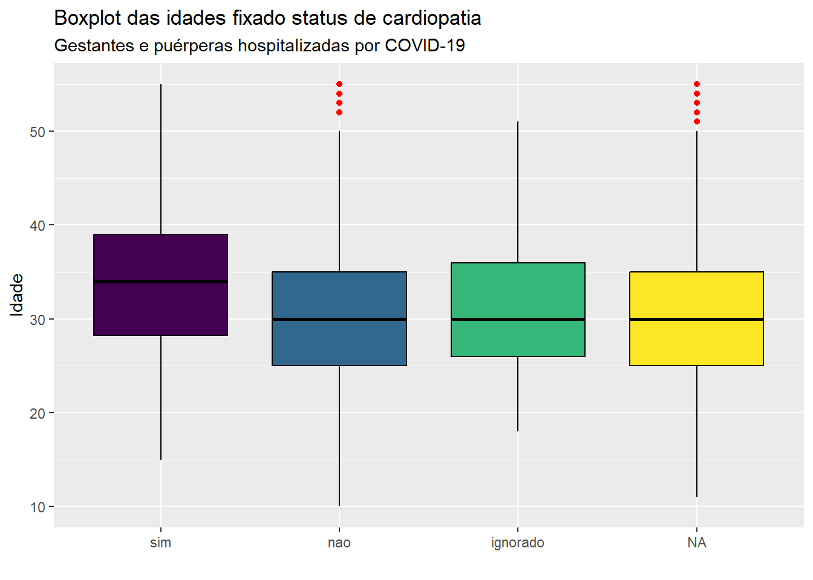
No código a seguir, vamos apresentar o boxplot da variável quantitativa idade pela variável qualitativa \(status\) de cardiopatia, estratificado nas diferentes categorias de evolução do caso. Para clareza do texto no gráfico, a legenda da variável cardiopatia foi colocada abaixo dele, assim como o texto no eixo horizontal foi disposto de forma inclinada, através da função theme(legend.position="bottom", axis.text.x=element_text(angle=30, hjust=0.8)).
ggplot(dados, aes(y=idade, x = cardiopati, fill = cardiopati)) +
geom_boxplot(color = "black") +
labs(x = "", y = "Idade", title = "Boxplot das idades pelo status de cardiopatia, fixada a evolução", subtitle = "Gestantes e puérperas hospitalizadas por COVID-19")+
theme(legend.position="bottom", axis.text.x=element_text(angle=30, hjust=0.8)) +
scale_fill_manual(values = c(viridis(4)), name = "Cardiopatia")+
facet_grid(~evolucao)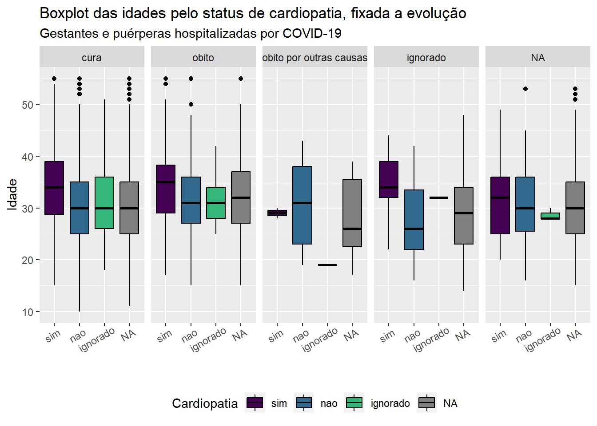
Nosso objetivo agora é explorar a construção de gráficos quando temos duas variáveis quantitativas através do diagrama de dispersão. Para exemplificar a construção, vamos considerar as variáveis do banco de dados dados_uti_res que contém as variáveis idade e quantidade de dias em uti (dias_uti).
ggplot(dados_uti_res, aes(x=idade, y = dias_uti)) +
geom_point(colour = viridis(1)) +
labs(x = "Idade", y = "Dias em UTI ", title = "Gráfico de dispersão da idade pelo tempo em UTI", subtitle = "Gestantes e puérperas hospitalizadas por COVID-19")
O pacote ggExtra consegue inserir no gráfico de dispersão gerado pelo ggplot2 histogramas, histogramas alisados e boxplot das variáveis marginais. Para isso, basta utilizar a função ggMarginal informando o nome do objeto em que está guardado o gráfico de dispersão e o tipo de gráfico marginal a ser inserido.
p <- ggplot(dados_uti_res, aes(x=idade, y = dias_uti)) +
geom_point(colour = viridis(1)) +
labs(x = "Idade", y = "Dias em UTI ", title = "Gráfico de dispersão da idade pelo tempo em UTI", subtitle = "Gestantes e puérperas hospitalizadas por COVID-19")
library(ggExtra)
# histograma marginal
ggMarginal(p, type="histogram")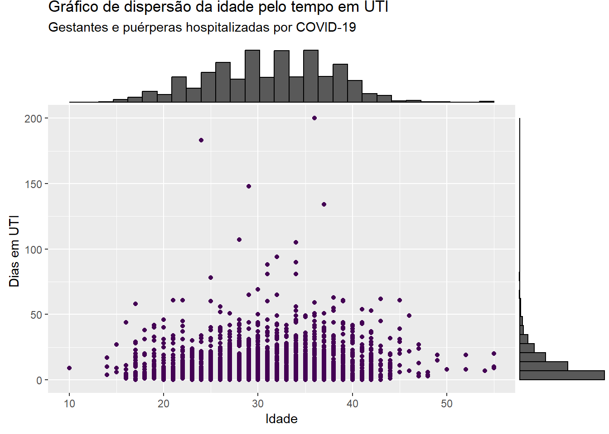
# histograma alisado marginal
ggMarginal(p, type="density")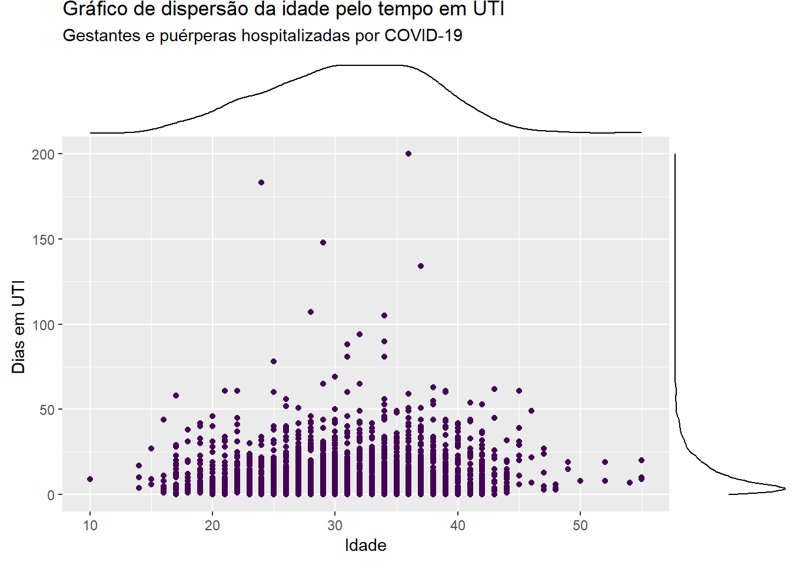
# Boxplot marginal
ggMarginal(p, type="boxplot")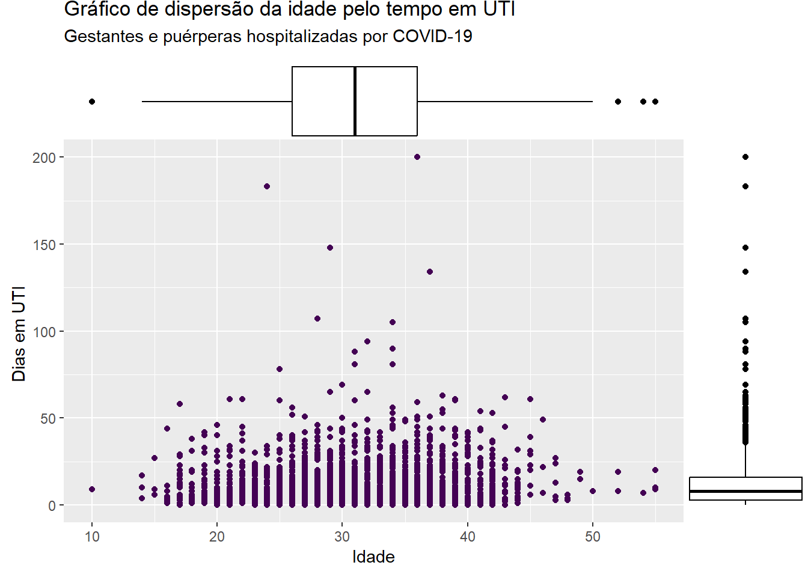
Podemos construir gráficos de dispersão estratificados por categorias de uma variável qualitativa. No código abaixo, vamos utilizar o \(status\) de cardiopatia e, para isso, usamos o argumento color = cardiopati na função geom_point.
ggplot(dados_uti_res, aes(x=idade, y = dias_uti)) +
geom_point(aes(color = cardiopati)) +
scale_colour_viridis_d("Cardiopatia", na.value = "grey50")+
labs(x = "Idade", y = "Dias em UTI ", title = "Gráfico de dispersão da idade pelo tempo em UTI, fixado status de cardiopatia", subtitle = "Gestantes e puérperas hospitalizadas por COVID-19")
Como pontos de diferentes cores estão sobrepondo, uma visualização possível para facilitar a análise pode ser feita separando os diagramas de dispersão em diferentes planos cartesianos de mesma escala.
ggplot(dados_uti_res, aes(x=idade, y = dias_uti)) +
geom_point(aes(color = cardiopati)) +
scale_colour_viridis_d("Cardiopatia", na.value = "grey50")+
labs(x = "Idade", y = "Dias em UTI ", title = "Gráfico de dispersão da idade pelo tempo em UTI, fixado status de cardiopatia", subtitle = "Gestantes e puérperas hospitalizadas por COVID-19")+
facet_wrap(~cardiopati, ncol=1)
4.3.2 Pacote esquisse
O pacote esquisse disponibiliza um \(dashboard\) interativo para criação de gráficos por meio do pacote ggplot2.
library(esquisse)Ao rodar a função esquisser(), um janela é aberta (veja Figura fig-Eq1), em que usuário deve escolher a base de dados a trabalhar. Feito isso, uma outra janela será aberta apresentando todas as variáveis presentes no banco de dados escolhido (veja Figura fig-Eq2), permitindo assim fazer os gráficos. Preparamos um tutorial para a utilização do pacote esquisse que pode ser acessado aqui (https://www.youtube.com/watch?XXXXXXXXXXXXX) .
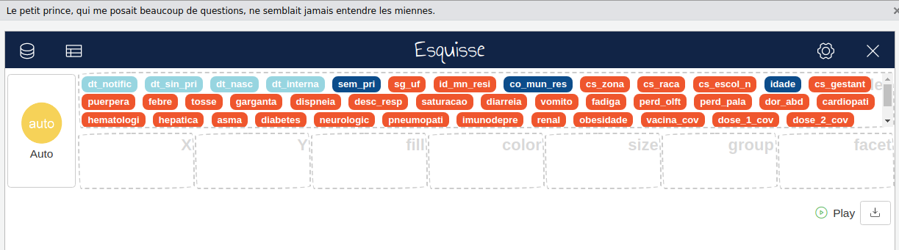
4.3.3 Materiais complementares
Livros e Artigos:
Mercier F, Consalvo N, Frey N, Phipps A, Ribba B. From waterfall plots to spaghetti plots in early oncology clinical development. Pharm Stat. 2019;18(5):526-532. doi:10.1002/pst.1944
Gillespie TW. Understanding waterfall plots. J Adv Pract Oncol. 2012;3(2):106-111.
Sonnad SS. Describing data: statistical and graphical methods. Radiology. 2002;225(3):622-628. doi:10.1148/radiol.2253012154
In J, Lee S. Statistical data presentation. Korean J Anesthesiol. 2017;70(3):267-276. doi:10.4097/kjae.2017.70.3.267
Morettin P, Singer J. Estatística e Ciência de Dados. 1nd ed. LTC; 2022.
\(Sites\):
- https://r-graph-gallery.com/index.html
- http://www.sthda.com/english/wiki/data-visualization
- https://www.cedricscherer.com/2019/08/05/a-ggplot2-tutorial-for-beautiful-plotting-in-r/